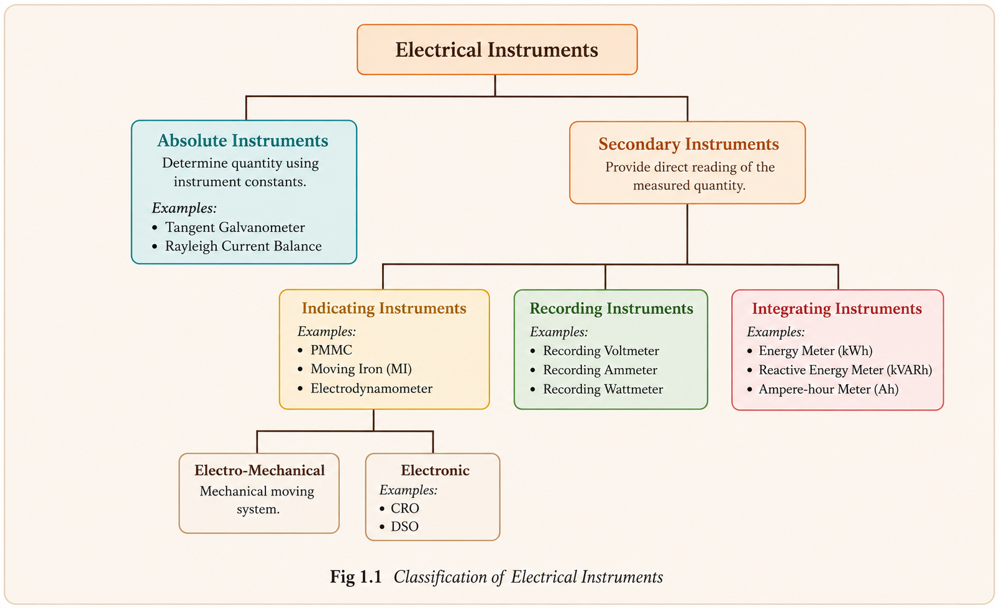
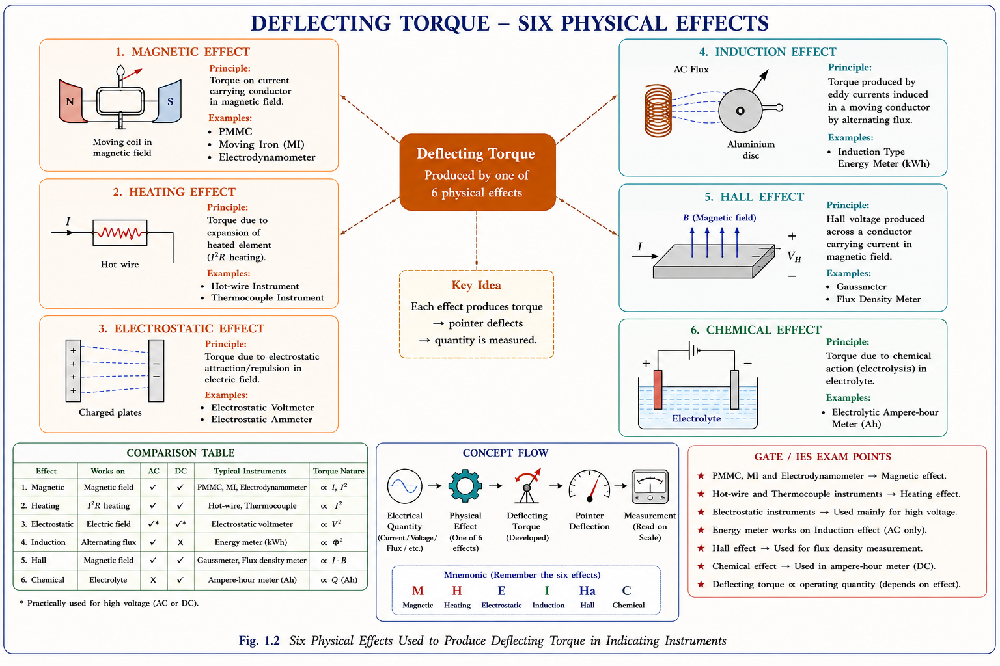
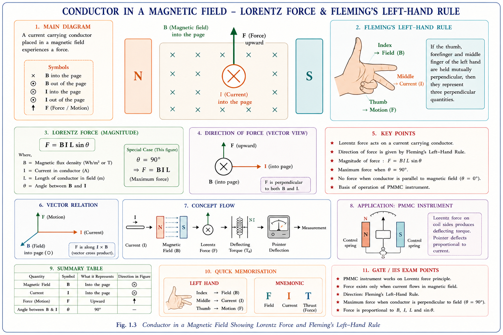
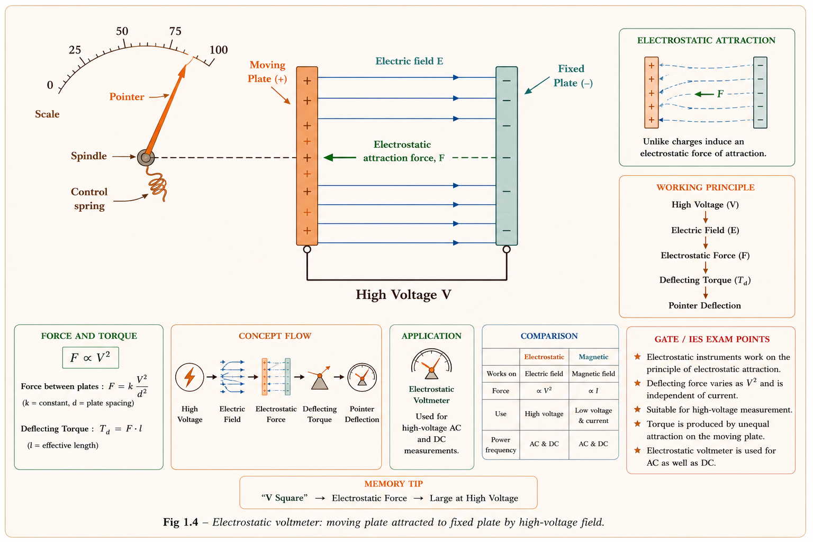
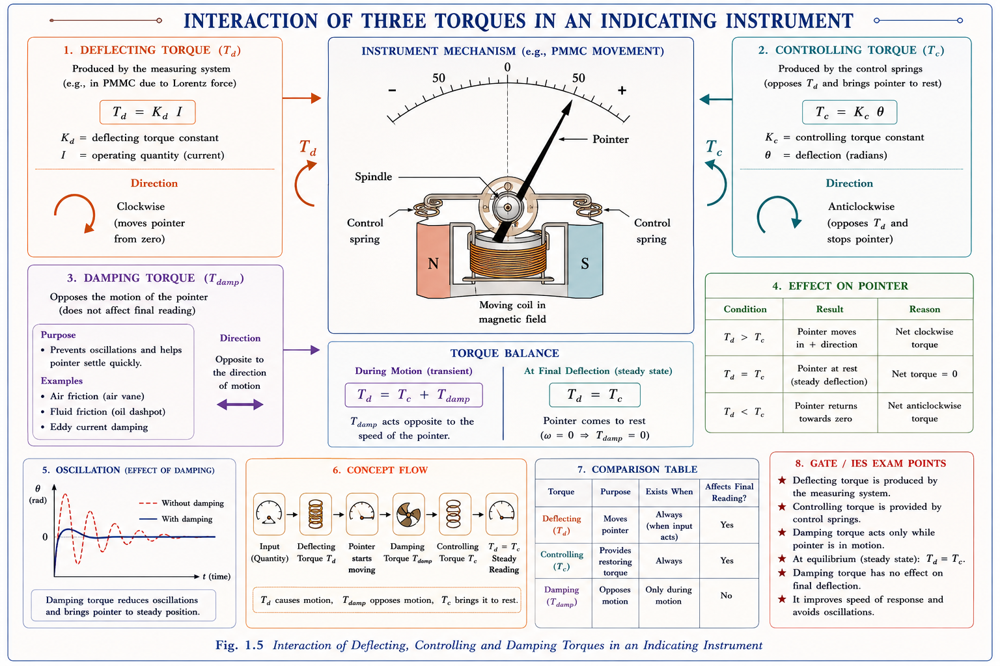
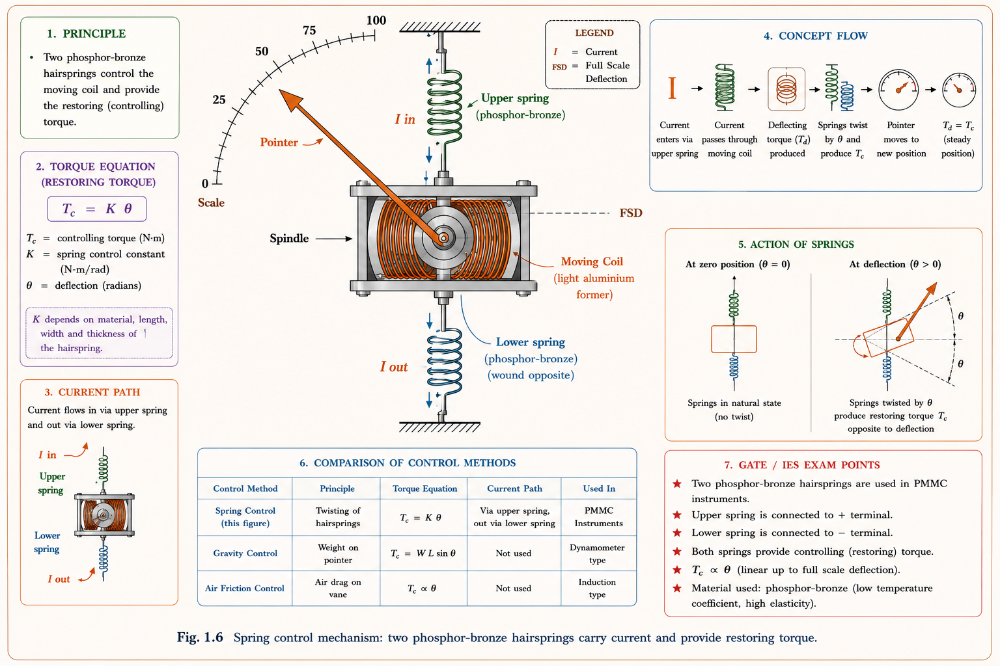
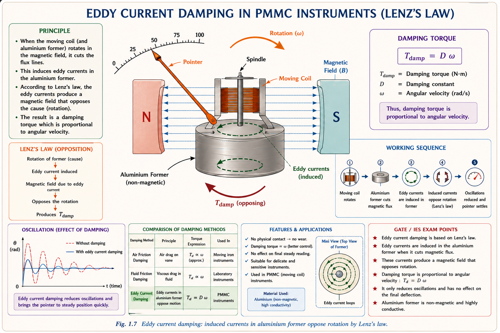
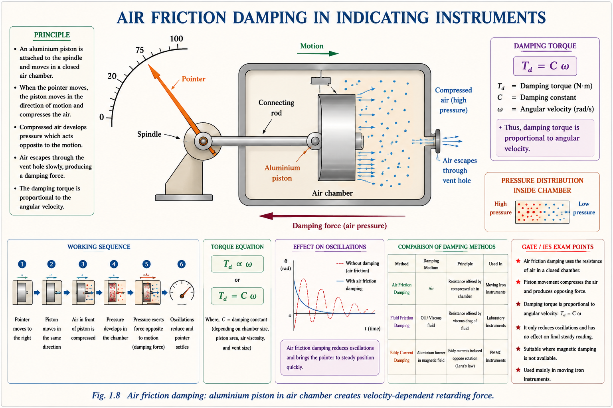
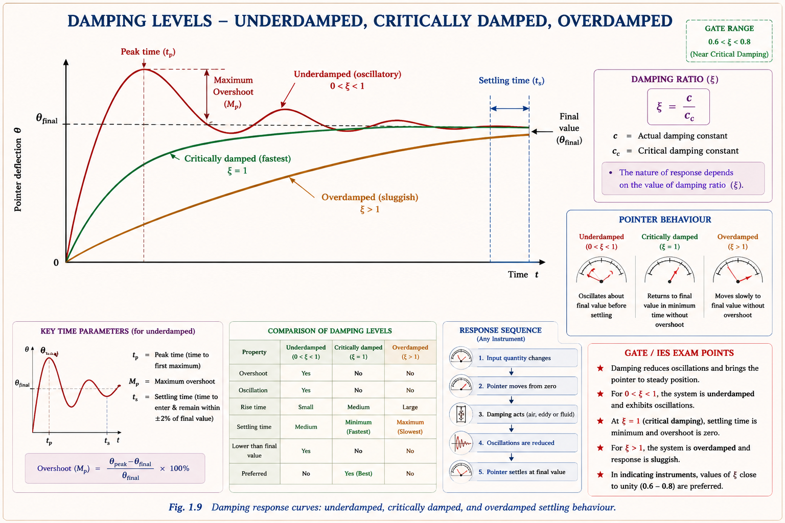

A deep conceptual study of classification, operating principles, torques, and damping mechanisms in indicating instruments — covering every concept tested in GATE EE and IES E&T with original derivations.
Every electrical system — from a household fan to a grid-scale power station — must be continuously monitored and controlled. Electrical measurement is the systematic process of determining the magnitude of an electrical quantity such as current, voltage, power, energy, or impedance by comparing it against a known standard.[2]
Without measurement you cannot control. A power plant operator who cannot read megawatt output cannot balance generation against load. A protection relay that cannot measure fault current cannot trip a breaker in time. Measurement is the nervous system of every electrical installation.
The field of electrical measurements sits at the intersection of physics, circuit theory, and signal processing. It connects directly with power systems (energy meters, wattmeters), control systems (transducers, feedback sensors), electronics (oscilloscopes, spectrum analysers), and communication engineering (signal level meters, network analysers).
Instruments are classified at two levels: first by how they relate to standards (absolute vs. secondary), and second — for secondary instruments — by what they do with the measured value (indicate, record, or integrate).

Fig 1.1 — Complete classification tree of electrical instruments. Original diagram — Aarova AI.
An absolute instrument does not give a direct numerical reading of the measured quantity. Instead, it gives a reading in terms of the physical constants of the instrument (length, angle, resistance, etc.) from which the measured value must be calculated.[3] Because no external calibration against another instrument is needed, these are inherently the most accurate instruments available and are used as primary standards in national laboratories.
Tangent galvanometer: current ∝ tan(θ), where θ is the angle of deflection. Current = (2r · BH · tan θ) / (μ₀ · n), which requires knowing Earth's horizontal field BH, coil radius r, and number of turns n — no pre-calibration. Rayleigh current balance: force between current-carrying coils is weighed against gravity; current derived from mass, length, and gravitational constant. Absolute electrometer: voltage computed from geometry and electrostatic force.
Secondary instruments are calibrated against absolute instruments and thereafter give direct, instantaneous deflection readings. All instruments used in everyday engineering practice — ammeters, voltmeters, wattmeters — are secondary instruments. They are grouped into three functional types.
| Type | Definition | Output Form | Key Examples | GATE Freq. |
|---|---|---|---|---|
| Indicating | Gives instantaneous value of the measurand via pointer-scale deflection | Pointer position on calibrated scale | PMMC ammeter, MI voltmeter, Dynamometer wattmeter, Frequency meter, Power factor meter | Very High |
| Recording | Continuously records measured values over time on chart paper or digital storage | Graph / waveform trace | Recording voltmeter, Recording wattmeter, Storage oscilloscope, Chart recorder | Medium |
| Integrating | Measures total accumulated quantity (∫q dt) over a period — adds up rather than indicates instantaneous value | Counter reading (kWh, kVARh, Ah) | Induction type energy meter (kWh), kVARh meter, Ampere-hour meter | High |
Students confuse these two. An indicating instrument (voltmeter) shows what the voltage is right now. An integrating instrument (energy meter) shows the total energy consumed from the moment it was connected. If a quantity in the question is measured in kWh or Ah, it is always an integrating instrument.
Every indicating instrument needs a physical phenomenon that converts the electrical measurand into a mechanical force (torque) that moves the pointer. Six such phenomena are exploited in practice. Understanding which instrument uses which effect is a staple of GATE questions.

Fig 1.2 — Six physical effects used to produce deflecting torque in indicating instruments. Original diagram — Aarova AI.
When a current-carrying conductor is placed in a magnetic field, it experiences a force described by the Lorentz force law. This is the operating principle of the PMMC and all moving-coil instruments.
where \(B\) = magnetic flux density [T], \(I\) = current [A], \(L\) = active conductor length [m], \(\theta\) = angle between current direction and field (\(= 90°\) in PMMC ∴ \(\sin\theta = 1\))
The direction of this force (and hence the pointer deflection direction) is found using Fleming's Left-Hand Rule: point the index finger along the field (N→S), the middle finger along the conventional current direction, and the thumb points in the direction of motion of the conductor.

Fig 1.3 — Conductor in a magnetic field: Lorentz force and Fleming's Left-Hand Rule. Original diagram — Aarova AI.
When a high voltage is applied between two capacitor plates, electrostatic attraction forces the plates together. If one plate is fixed and the other is free to rotate (connected to the pointer), the pointer deflects proportionally to the applied voltage. This is the basis of the electrostatic voltmeter, which draws negligible current and is uniquely suited for measuring very high DC and AC voltages (up to hundreds of kV) without a transformer or resistive divider.

Fig 1.4 — Electrostatic voltmeter: moving plate attracted to fixed plate by high-voltage field. Original — Aarova AI.
| Effect | Physical Basis | Instrument(s) | AC/DC? |
|---|---|---|---|
| Magnetic (PMMC) | Lorentz force on current-carrying coil in permanent magnet field | PMMC ammeter/voltmeter | DC only |
| Magnetic (MI) | Force between current-carrying coil and soft-iron vane | Moving Iron ammeter/voltmeter | AC & DC |
| Heating | Expansion of wire due to I²R heating | Hot-wire ammeter | AC & DC |
| Electrostatic | Force between charged capacitor plates | Electrostatic voltmeter | AC & DC (high V) |
| Induction | Eddy current reaction torque on rotating disc | Energy meter (induction type) | AC only |
| Hall Effect | Force on carriers in combined B field and current | Gauss-meter, flux meter | Both |
| Chemical | Electrolytic deposition proportional to charge | Electrolytic Ah meter | DC only |
Every indicating instrument requires a careful torque balance. Three distinct torques interact to produce a stable, accurate, and quick-settling pointer reading. Understanding each — and what happens if one is absent — is the single most tested concept in GATE Electrical Measurements.

Fig 1.5 — Interaction of three torques in an indicating instrument. Original — Aarova AI.
The deflecting torque is the driving torque produced by the interaction of the measurand (current, voltage, power) with the instrument's operating mechanism. It is always proportional to the quantity being measured and causes the pointer to move from its zero (rest) position.
If only deflecting torque is present (no controlling torque), the pointer would swing to full-scale deflection regardless of the actual quantity — it has nothing to balance against. The instrument becomes useless as a measurement device.
The controlling torque acts in the opposite direction to the deflecting torque and increases as the pointer moves further from zero. It stops the pointer at the final deflection angle where \(T_c = T_d\). Without it, the pointer would slam to full scale every time any current flowed.
Consider a spring: the more you stretch it, the greater the restoring force. Similarly, controlling torque must grow with angle θ so that for each value of T_d (i.e., each input quantity), there is exactly one equilibrium angle. This guarantees a unique scale marking for every measurand value.
At the equilibrium (final steady-state) position: \(T_c = T_d\). At this exact point, damping torque is zero because the pointer speed is zero — damping torque depends on velocity, not position. This is a critically important fact for GATE.
The damping torque opposes the motion of the pointer (it is a velocity-dependent torque, not a position-dependent one). Its purpose is to prevent the pointer from oscillating indefinitely about its equilibrium position. Without damping, even a tiny T_d would cause the pointer to oscillate forever (like a frictionless pendulum in vacuum). Damping torque dissipates the kinetic energy of the moving system, allowing it to settle.
\(T_c\) depends on position (angle \(\theta\)). \(T_{damp}\) depends on velocity (\(d\theta/dt\)). \(T_{damp}\) is independent of both \(T_c\) and \(T_d\) — this is stated directly in textbooks and appears in GATE conceptual questions. At steady state, \(T_c = T_d\) and \(T_{damp} = 0\).
Two methods are universally used to produce controlling torque: spring control and gravity control. A third method (air control) is obsolete. Spring control is overwhelmingly dominant in modern instruments.
Two hairsprings (usually phosphor-bronze) are wound in opposite senses and connected in series with the moving coil. As the pointer deflects by angle θ, one spring tightens and the other loosens, producing a restoring torque proportional to deflection.
\(k\) = spring stiffness constant [N·m/rad], \(\theta\) = deflection angle [rad]. At equilibrium: \(k\theta = T_d\), so \(\theta \propto T_d \propto I\) — giving a linear (uniform) scale.

Fig 1.6 — Spring control mechanism: two phosphor-bronze hairsprings carry current and provide restoring torque. Original — Aarova AI.
Gives a linear (uniform) scale, which is easy to read and calibrate. Instrument can be used in any position (horizontal, vertical, tilted) — gravity does not affect the reading. Springs also serve as the current-carrying path into and out of the moving coil (PMMC). In MI instruments, the spring is separate and carries no current. In PMMC, if the spring snaps (breaks), no current flows through the coil — pointer stays at zero.
Here, a small adjustable weight is mounted on the pointer arm. As the pointer deflects, the weight moves horizontally and creates a restoring gravitational torque.
\(m\) = mass of weight, \(g\) = 9.81 m/s², \(d\) = distance of weight from spindle, \(\theta\) = deflection angle. At equilibrium: \(mg \cdot d \cdot \sin\theta = T_d\) — since \(\sin\theta\) is non-linear, the scale is non-uniform (compressed near zero).
| Feature | Spring Control | Gravity Control |
|---|---|---|
| Controlling mechanism | Phosphor-bronze hairspring | Counter-weight on arm |
| Controlling torque | \(T_c = k\theta\) | \(T_c = mgd\sin\theta\) |
| Scale type | Uniform (linear) — easy to read | Non-uniform — compressed near 0° |
| Positional dependence | Any position — gravity irrelevant | Vertical position only — gravity essential |
| Max useful range | Up to full scale | Up to 90° only (T_c ∝ sin θ, max at 90°) |
| Portability | Yes — portable instruments | Not portable (must be vertical) |
| Current carrying | Yes (in PMMC) | No |
| Usage today | All modern instruments | Obsolete / lab galvanometers |
Three physical methods are used in practice. Each has specific applications depending on the strength of the instrument's own magnetic field and the available deflecting torque.
When a conducting (non-magnetic) metal disc or former rotates in a permanent magnetic field, Faraday's law induces EMFs within the disc, driving eddy currents. By Lenz's law, these eddy currents create their own magnetic field opposing the disc's motion — producing a retarding torque proportional to angular velocity.

Fig 1.7 — Eddy current damping: induced currents in aluminium former oppose rotation by Lenz's law. Original — Aarova AI.
Eddy current damping effectiveness is proportional to B². PMMC instruments have a strong permanent magnet field — ideal for eddy current damping. Moving-iron instruments have a much weaker field (only the coil's own field), so eddy current damping is less effective there and air-friction damping is used instead.
An aluminium piston moves inside a closely fitting cylindrical air chamber. As the pointer moves, the piston compresses or expands the trapped air, creating a retarding pressure force on the piston — and hence a damping torque. The gap between piston and cylinder must be uniform and very small for effective damping.

Fig 1.8 — Air friction damping: aluminium piston in air chamber creates velocity-dependent retarding force. Original — Aarova AI.
Air friction damping is used in moving-iron instruments, electrodynamometer wattmeters, and induction-type instruments — all of which have weak or complex magnetic fields unsuitable for eddy current damping.
A light disc attached to the spindle is partially immersed in a high-viscosity mineral oil. As the disc rotates, viscous drag from the oil opposes motion, providing damping. The instrument must be mounted vertically only (oil must stay in place). This method is used in electrostatic voltmeters, which have very low deflecting torques and need a gentle (non-mechanical) damping method.

Fig 1.9 — Damping response curves: underdamped, critically damped, and overdamped settling behaviour. Original — Aarova AI.
| Damping Type | Damping Ratio ξ | Behaviour | Pointer Action |
|---|---|---|---|
| Underdamped | ξ < 1 | Oscillates about final value; takes long time to settle | Swings past, comes back, settles slowly |
| Critically damped | ξ = 1 ("dead beat") | Reaches final value in shortest time with no overshoot | Ideal — fast and stable |
| Overdamped | ξ > 1 | No oscillations but very slow approach to final value | Sluggish — unacceptable in practice |
| Practical instruments | 0.6 < ξ < 0.8 | Slight overshoot then quick settling — acceptable in practice | Near-dead-beat; slightly fast reading |
From most to least effective:
Eddy current > Fluid friction > Air friction
This order appears in GATE/IES questions. Eddy current damping is the most effective because the
damping torque is directly proportional to B² (which is large in permanent magnet instruments
like PMMC).
Air friction is weakest but is applicable to all instrument types.
When selecting or specifying an instrument, the following four parameters define its measurement capability. These appear in straightforward GATE/IES questions.
| Term | Definition | Formula | Example |
|---|---|---|---|
| Range | The minimum-to-maximum values the instrument is calibrated to read | — (stated as: Xmin to Xmax) | 0 A to 10 A |
| Span | The algebraic difference between the maximum and minimum values of the range | Span = Xmax − Xmin | 10 − 0 = 10 A |
| Full-Scale Deflection | Maximum pointer travel — corresponds to Xmax | — (mechanical maximum) | 100° travel |
| Scale length | Arc length of the scale from zero to FSD | l = r · θFSD | 150 mm arc |
A voltmeter with range 50 V–150 V has a span of 100 V. Its zero point is at 50 V, not 0 V. This is a suppressed-zero instrument. Reading accuracy depends on span, not range. A reading of 90 V on this instrument has a possible error of ±(% FSD error × 100 V / 90 V) — much larger than if you read 90 V on a 0–150 V instrument.
No measurement is perfect. Errors are deviations of the instrument reading from the true value. They are classified by origin into three fundamental types.
| Error Class | Causes | Examples | Remedy |
|---|---|---|---|
| Gross Errors | Human mistakes — misreading scale, wrong range, incorrect connections | Reading 2.4 as 24; connecting ammeter in parallel | Care, multiple readings, awareness |
| Systematic Errors | Instrument imperfections, method limitations — always in the same direction | Zero error, friction error, parallax error, stray magnetic field | Calibration, shielding, correction factors |
| Random Errors | Unpredictable, random variations — noise, vibration, supply fluctuation | Pointer oscillating slightly; supply ripple affecting reading | Statistical averaging of many readings |
| Term | Meaning | GATE perspective |
|---|---|---|
| Accuracy | How close the reading is to true value | Expressed as % of full scale or % of reading |
| Precision | Repeatability — same result every time (may still be inaccurate) | High precision + low accuracy = systematic error present |
| Resolution | Smallest change detectable | For a 0–100 V meter with 100 divisions: 1 V/division |
| Sensitivity | Output change per unit input change (dθ/dI for ammeter) | High sensitivity = large deflection for small current |
| Hysteresis Error | Different readings for same quantity depending on whether input is increasing or decreasing | Caused by magnetic hysteresis in MI instruments — one reason MI has lower accuracy than PMMC |
Questions on this chapter overwhelmingly focus on: (1) identifying which torque is absent and predicting pointer behaviour, (2) spring vs gravity control — which gives uniform scale?, (3) damping ratio and "dead-beat" meaning, and (4) which damping method suits which instrument.
A watt-hour meter is an example of which type of secondary instrument?
Key Reasoning: A watt-hour meter accumulates (integrates) energy ∫P dt over time and displays the total in kWh via a counter. It does not show instantaneous power — that would be a wattmeter (indicating instrument). Total kWh = integrating. Always ask: does it accumulate or instantaneously display?
The damping torque in an indicating instrument is proportional to which of the following?
Key Reasoning: Damping torque opposes motion, so it depends on the rate of change of deflection (angular velocity). \(T_{damp} = D \cdot (d\theta/dt)\) where \(D\) is the damping coefficient. At rest (final position), \(d\theta/dt = 0\), so \(T_{damp} = 0\) — even though \(T_c\) and \(T_d\) are both non-zero and equal. Option (A) describes controlling torque, not damping torque.
Which of the following statements about spring-control and gravity-control in indicating
instruments is/are correct?
1. Spring control gives a uniform (linear) scale
2. Gravity control can be used in any position
3. In spring-controlled PMMC instruments, the springs also carry current to the moving coil
Key Reasoning: Statement 1 ✓ — T_c = kθ (linear), so θ ∝ I, giving uniform scale. Statement 2 ✗ — Gravity control requires vertical mounting; if tilted, the weight's moment arm changes and the reading becomes wrong. Statement 3 ✓ — In PMMC, the two phosphor-bronze hairsprings are the only path for current into and out of the moving coil (no brush-and-ring contacts).
Eddy current damping is NOT preferred in moving-iron instruments because:
Key Reasoning: Eddy current damping torque ∝ B². In MI instruments the field is produced by the current through the coil itself — much weaker than a permanent magnet. Therefore eddy current damping would be feeble and inadequate. Air friction damping is used instead because it is independent of the magnetic field strength.
Many students believe all three torques coexist at the final steady-state deflection. Wrong. At the final position the pointer is stationary (\(d\theta/dt = 0\)), so \(T_{damp} = D \cdot (d\theta/dt) = 0\). Only \(T_d\) and \(T_c\) are present at equilibrium, and they are exactly equal.
Spring control gives uniform (linear) scale because T_c = kθ and T_d ∝ I, so kθ = cI → θ ∝ I — pointer angle is directly proportional to current. Gravity control gives a non-uniform scale because T_c ∝ sinθ (not θ).
True that absolute instruments provide the definition of accuracy (they are primary standards), but they are impractical for field use. For day-to-day engineering, a well-calibrated PMMC voltmeter (secondary instrument) is used. Accuracy of secondary instruments depends entirely on how carefully they were calibrated against absolute instruments.
The eddy currents do dissipate a small amount of power as heat, but this power comes from the kinetic energy of the moving system (not from the electrical circuit), and is small enough to be negligible in practice. The method does not affect accuracy or calibration. However, if you are asked about heat sources in instruments, note that the coil resistance does produce I²R heating in the moving coil — this is a separate concern.
Recording instruments may be purely mechanical (a lightweight pen pressing on moving chart paper driven by a clock motor), or electromechanical (a servo-driven pen), or electronic (digital storage oscilloscope). The defining feature is that they record a trace over time, not whether they are digital. The storage oscilloscope is an electronic recording instrument.
Absolute → via instrument constants. Secondary → direct reading. Secondary types: Indicating (pointer), Recording (chart), Integrating (counter/kWh).
Produced by 6 effects: Magnetic, Heating, Electrostatic, Induction, Hall, Chemical. Drives pointer from zero. Proportional to measurand.
Opposes \(T_d\). Spring: \(T_c = k\theta \rightarrow\) uniform scale, any position. Gravity: \(T_c = mgd\cdot\sin\theta \rightarrow\) non-uniform, vertical only. At equilibrium: \(T_c = T_d\).
\(T_{damp} \propto d\theta/dt\). Zero at rest. Eddy current (PMMC) > Fluid friction (electrostatic VM) > Air friction (MI, dynamometer). Practical \(\xi\): 0.6–0.8.
Dead-beat = critically damped (\(\xi=1\)). No \(T_c \rightarrow\) FSD always. No \(T_d \rightarrow\) zero always. No \(T_{damp} \rightarrow\) oscillates forever. 2nd-order system.
PMMC: Magnetic (DC only). MI: Magnetic (AC+DC). Electrostatic VM: Electrostatic (high V). Energy meter: Induction (AC only). Ah meter: Chemical (DC).
Ask any question on Chapter 1: instrument types, torques, damping, GATE problems, or conceptual doubts.
All technical content is derived from the following standard textbooks. All explanations, derivations, and diagrams are original to Aarova AI.